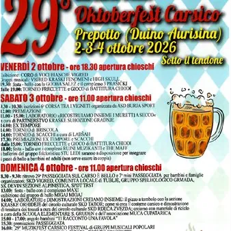

da ven 2 ott a dom 4 ott · dalle 18:30
29°Oktoberfest Carsico
Organizzata dal Circolo culturale sloveno Vigred, l’OktoberFest Carsico è una bellissima festa dove oltre alla birra c’è molto di più. Qui per tre giorni potrete mangiare ottimi piatti della tradizione nei fornitissimi chioschi eno-gastronomici sotto al grande tendone. Potrete…
 Indicazioni
Indicazioni
- Costi e prenotazioni
- Costo non indicato · Prenotazione non indicata
- Programma
- Programma da verificare. Apri la fonte ufficiale per orari e possibili aggiornamenti.
- In caso di maltempo
- Nessuna indicazione specifica pubblicata.
- Note
- Acquisito automaticamente dalla fonte.
L’EVENTO
Descrizione completa
Programma della 29esima edizione dell'Oktoberfest carsico Spazio eventi a Prepotto (Duino Aurisina), 2, 3 e 4 ottobre 2026 sotto il tendone
VENERDÌ 2 OTTOBRE , apertura chioschi ore 18:30
Esibizione: CORO DEI BAMBINI VIGRED e gruppi musicali: VIGRED KRASKI FENOMENI, HIGH SKULL
19.30: festa – ballo con la GODBA SALEŽ e il complesso 3 PRAŠIČKI
Dalle 19.00 TORNEO DI FRECCETTE e GIOCO di BATTITURA DEI CHIODI
SABATO 3 ottobre , apertura chioschi ore 11:00
9.30 – 10.30: iscrizione alla 6a CORSA TRA I VIGNETI organizzata da AŠD BURJA SPORT
12.00: PREMIAZIONI
11.00 – 15.00: LABORATORIO RICOSTRUIAMO INSIEME I MURETTI A SECCO organizzato da PARTNERSTVO KARŠKE SUHOZIDNE GRADNJE
14.00: EX TEMPORE
14.00: TORNEO a BRISCOLA
14.00: TORNEO DI SCACCHI organizzato da LabŠah
dalle 15.00: TORNEO DI FRECCETTE e GIOCO DI BATTITURA DEI CHIODI
17.30: premiazioni EX TEMPORE e SCACCHI
18.00: festa-ballo con i complessi RUVJNI MUSIKANTI e THE MAFF
Bambini e adulti che desiderano imparare i passi di danza (non serve essere in coppia) potranno farlo sotto la guida dei ballerini del gruppo folcloristico STU LEDI
DOMENICA 4 ottobre, apertura chioschi ore 11:00
8.30 – 9.30: ritrovo 29° PASSEGGIATA SUL CARSO È BELLO e 7° MINI PASSEGGIATA per bambini e famiglie
13.00: festa – ballo con il gruppo MAXI
Esibizione del gruppo di ballo MIGAJ MIGAJ
14.00: LABORATORI e DIMOSTRAZIONI CREIAMO INSIEME: il pizzo a tombolo con la sezione ORCHIDEE CARSICHE; come si realizza il costume nazionale SKD RDECA ZVEZDA, dimostrazione di tessitura; riciclo artistico associazione MUCA CUPATARICA e S. ELEMENTARE S.GRUDEN
15.00 – 17.00: angolo bambini "TI RACCONTO UNA FAVOLA"
15.30: premiazione PASSEGGIATA
16.00: 29° MUZIKFEST CARSICO FESTIVAL di gruppi musicali popolari
Dalle 13:00: GIOCO di BATTITURA CHIODI e TORNEO FRECCETTE
Ore: 21.00 PREMIAZIONI
Nei chioschi ben forniti non mancheranno le leccornie per gli stomaci affamati e le gole assetate!
IN CASO DI MALTEMPO L'INTERO PROGRAMMA SI SVOLGERÀ SOTTO IL TENDONE.
Entrata libera!
Per informazioni:
tajnistvo@skdvigred.org
IL PROGRAMMA
Programma e orari
Appuntamenti raccolti dalle fonti elencate. Dove manca un orario, non è ancora disponibile in questa scheda.
Programma pubblicato
- 19.30: festa – ballo con la GODBA SALEŽ e il complesso 3 PRAŠIČKI
- 9.30 – 10.30: iscrizione alla 6a CORSA TRA I VIGNETI organizzata da AŠD BURJA SPORT
- 12.00: PREMIAZIONI
- 11.00 – 15.00: LABORATORIO RICOSTRUIAMO INSIEME I MURETTI A SECCO organizzato da PARTNERSTVO KARŠKE SUHOZIDNE GRADNJE
- 14.00: EX TEMPORE
- 14.00: TORNEO a BRISCOLA
- 14.00: TORNEO DI SCACCHI organizzato da LabŠah
- 17.30: premiazioni EX TEMPORE e SCACCHI
- 18.00: festa-ballo con i complessi RUVJNI MUSIKANTI e THE MAFF
- 8.30 – 9.30: ritrovo 29° PASSEGGIATA SUL CARSO È BELLO e 7° MINI PASSEGGIATA per bambini e famiglie
- 13.00: festa – ballo con il gruppo MAXI
- 15.00 – 17.00: angolo bambini "TI RACCONTO UNA FAVOLA"
- 15.30: premiazione PASSEGGIATA
- 16.00: 29° MUZIKFEST CARSICO FESTIVAL di gruppi musicali popolari
INFORMAZIONI UTILI
Prima di partire
- Controllare la fonte prima di partire.
ORGANIZZAZIONE